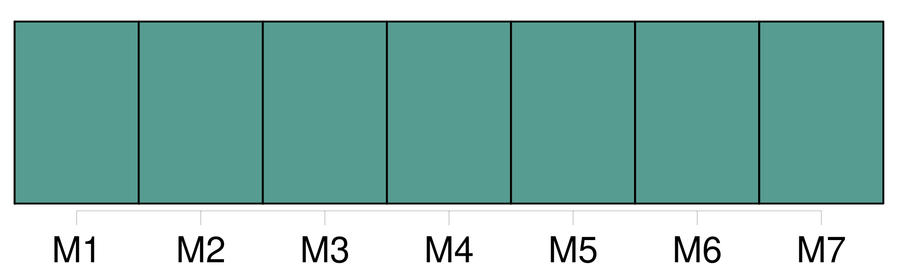
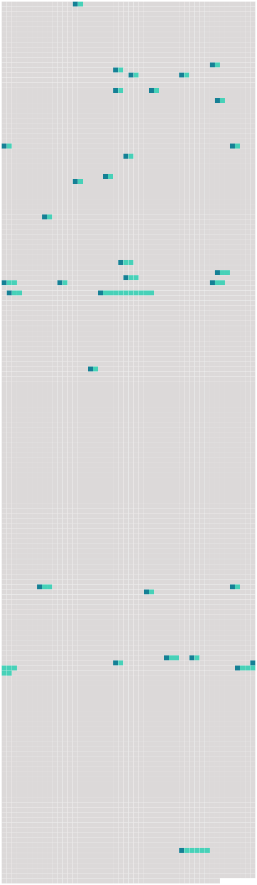

Longueur nb maillons : 32 mentions |
  |
Elle s'applique également aux transports gratuits effectués par aéronef par une entreprise de [transport aérien] [25 phrases]
Pour le transport de marchandises, une lettre de [transport aérien] est émise. [1 phrases] L'emploi de tout autre moyen constatant les indications relatives au transport à exécuter peut se substituer à l'émission de la lettre de [transport aérien] [1 phrases]
Article 5 [2 phrases]
Article 7
La lettre de [transport aérien] est établie par l'expéditeur en trois exemplaires originaux. [7 phrases]
Si, à la demande de l'expéditeur, le transporteur établit la lettre de [transport aérien] , ce dernier est considéré, jusqu'à preuve du contraire, comme agissant au nom de l'expéditeur. [10 phrases]
La lettre de [transport aérien] et le récépissé de marchandises font foi, jusqu'à preuve du contraire, de la conclusion du contrat, de la réception de la marchandise et des conditions du transport qui y figurent. [1 phrases]
Les énonciations de la lettre de [transport aérien] et du récépissé de marchandises, relatives au poids, aux dimensions et à l'emballage de la marchandise ainsi qu'au nombre des colis, font foi jusqu'à preuve du contraire ; celles relatives à la quantité, au volume et à l'état de la marchandise ne font preuve contre le transporteur que si la vérification en a été faite par lui en présence de l'expéditeur, et constatée sur la lettre de [transport aérien] , ou s'il s'agit d'énonciations relatives à l'état apparent de la marchandise. [5 phrases]
Si le transporteur exécute les instructions de disposition de l'expéditeur, sans exiger la production de l'exemplaire de la lettre de [transport aérien] ou du récépissé de la marchandise délivré à celui -ci, il sera responsable, sauf son recours contre l'expéditeur, du préjudice qui pourra être causé par ce fait à celui qui est régulièrement en possession de la lettre de [transport aérien] ou du récépissé de la marchandise. [13 phrases]
Toute clause dérogeant aux dispositions des articles 12, 13 et 14 doit être inscrite dans la lettre de [transport aérien] ou dans le récépissé de marchandises. [16 phrases]
Le transporteur est responsable du dommage survenu en cas de destruction, perte ou avarie de la marchandise par cela seul que le fait qui a causé le dommage s'est produit pendant [le transport aérien] [3 phrases]
[Le transport aérien] , au sens du paragraphe 1 du présent article, comprend la période pendant laquelle la marchandise se trouve sous la garde du transporteur. [1 phrases] La période [du transport aérien] ne couvre aucun transport terrestre, maritime ou par voie d'eau intérieure effectué en dehors d'un aéroport. Toutefois, lorsqu' [un tel transport] est effectué dans l'exécution du contrat de [transport aérien] en vue du chargement, de la livraison ou du transbordement, tout dommage est présumé, sauf preuve du contraire, résulter d'un fait survenu pendant [le transport aérien]
Si, sans le consentement de l'expéditeur, le transporteur remplace en totalité ou en partie le transport convenu dans l'entente conclue entre les parties comme étant le transport par voie aérienne, par un autre mode de transport, ce transport par un autre mode sera considéré comme faisant partie de la période [du transport aérien]
Article 19 [18 phrases]
Toutefois, lorsque la destruction, la perte, l'avarie ou le retard d'une partie des marchandises, ou d'un objet qui y est contenu, affecte la valeur d'autres colis couverts par la même lettre de [transport aérien] ou par le même récépissé ou, en l'absence de ces documents, par les mêmes indications consignées par les autres moyens visés à l'article 4, paragraphe 2, le poids total de ces colis doit être pris en considération pour déterminer la limite de responsabilité. [55 phrases]
En ce qui concerne le dommage résultant de la mort ou d'une lésion corporelle subie par un passager, l'action en responsabilité peut être intentée devant l'un des tribunaux mentionnés au paragraphe 1 du présent article ou, eu égard aux spécificités [du transport aérien] , sur le territoire d'un État partie où le passager a sa résidence principale et permanente au moment de l'accident et vers lequel ou à partir duquel le transporteur exploite des services de [transport aérien] , soit avec ses propres aéronefs, soit avec les aéronefs d'un autre transporteur en vertu d'un accord commercial, et dans lequel ce transporteur mène ses activités de [transport aérien] à partir de locaux que lui-même ou un autre transporteur avec lequel il a conclu un accord commercial loue ou possède. [27 phrases]
Dans le cas de transport intermodal effectué en partie par air et en partie par tout autre moyen de transport, les dispositions de la présente convention ne s'appliquent, sous réserve du paragraphe 4 de l'article 18, qu' [au transport aérien] et si [celui -ci] répond aux conditions de l'article 1. [1 phrases]
Rien dans la présente convention n'empêche les parties, dans le cas de transport intermodal, d'insérer dans le titre de [transport aérien] des conditions relatives à d'autres modes de transport, à condition que les stipulations de la présente convention soient respectées en ce qui concerne [le transport par air]
CHAPITRE V [47 phrases]
Article 55 |
 |
La ressource peut être téléchargée sur la page Ortolang
Si vous avez des questions ou vous voyez des erreurs, merci d'envoyer un mail à silvia.federzoni89@gmail.com
Site développé par S. Federzoni (contact)